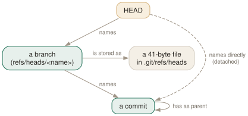

Day 03
Branches are pointers
A branch is a file holding one hash. HEAD is a file naming a branch. Everything else follows.
By the end of today you can
- explain what moves, and what does not, when you commit, create a branch or switch to one
- create, switch, rename and delete branches without reaching for a GUI
- recognise a detached HEAD, and leave it without losing the commits you made there
A branch is forty-one bytes
A branch is not a copy of anything, not a line of development, not a container of commits. It is a file in .git/refs/heads/ containing one commit hash and a newline. Creating one writes that file; committing on one rewrites it. The history the branch “has” is everything reachable from that commit by following parents.
$ git switch -c feature
Switched to a new branch 'feature'
$ cat .git/HEAD
ref: refs/heads/feature
$ cat .git/refs/heads/feature .git/refs/heads/main
72da6fa2ba428bd5eafc0699d5e7adf1b9e9e80d
72da6fa2ba428bd5eafc0699d5e7adf1b9e9e80d
$ git commit -qam 'Feature work'
$ git branch -v
* feature 29abc22 Feature work
main 72da6fa Start
Two branches, same hash, until the commit. Then only feature moved. How did git know which to move? Because of the second pointer, HEAD. The manual page defines it in one line under SYMBOLIC IDENTIFIERS — “the head of the current branch” — and in DISCUSSION it is a symbolic ref: a ref whose content is the name of another ref, not a hash.

Switching moves HEAD, then the files
git switch <branch> does two things: rewrites .git/HEAD to name the branch, and updates the index and working tree from HEAD's old commit to the new one. Files that did not change between the two commits are not touched at all, which is why switching in a large repository is usually instant.
git switch -c name- Create at HEAD and switch. The one you type most.
git switch -- Back to the previous branch, like
cd -. git branch name- Create without switching. Rarely what you want mid-work.
git branch -m old new- Rename: move the ref file, and its reflog with it.
git branch -d name- Delete, if its commit is merged.
-Ddeletes regardless.
Uncommitted changes travel with you when you switch, as long as the files they touch are the same in both commits. When they are not, git refuses rather than overwrite them — commit, or stash them (Day 13), then switch.
$ git branch -d feature
error: the branch 'feature' is not fully merged
hint: If you are sure you want to delete it, run 'git branch -D feature'
$ git branch -D feature
Deleted branch feature (was 29abc22).
Detached HEAD
HEAD can also hold a commit hash directly. That is the detached HEAD state, and it is what you get when you check out a tag, an old commit, or a remote branch without creating a local one. It is useful — for looking around, for building an old version, for bisecting (Day 16) — and git switch makes you ask for it explicitly:
$ git switch 72da6fa
fatal: a branch is expected, got commit '72da6fa'
hint: If you want to detach HEAD at the commit, try again with the --detach option.
$ git switch --detach 72da6fa
HEAD is now at 72da6fa Start
$ cat .git/HEAD
72da6fa2ba428bd5eafc0699d5e7adf1b9e9e80d
You can commit here. The commit moves HEAD, and nothing else. When you switch away, the only pointer to it is gone — and git tells you, once:
$ git commit -qam 'Detached work'
$ git switch main
Warning: you are leaving 1 commit behind, not connected to
any of your branches:
50c6022 Detached work
If you want to keep it by creating a new branch, this may be a good time
to do so with:
git branch <new-branch-name> 50c6022
A branch list you can read
git branch sorts alphabetically. After a few months a repository has dozens of branches, and the ones you care about are the ones you touched recently. branch.sort takes any git for-each-ref field; -committerdate is newest first:
$ git branch -v
alpha 7be1a36 a
* main ac874fc Second
middle ac874fc Second
zebra 7be3672 Zebra fix
$ git -c branch.sort=-committerdate branch -v
* main ac874fc Second
middle ac874fc Second
zebra 7be3672 Zebra fix
alpha 7be1a36 a
Today's habit
Start every piece of work, however small, with git switch -c. When git status says HEAD detached, stop and make a branch before doing anything else.
Tomorrow: what happens when two branches that moved independently have to become one.
New vocabulary
Commands
| Command | Does |
|---|---|
git branch | List local branches; * marks the one HEAD names. |
git branch -v | List branches with the commit each points at and its subject line. |
git branch <name> | Create a branch at HEAD without switching to it. |
git switch <branch> | Point HEAD at a branch and update the index and working tree to its commit. |
git switch -c <name> | Create a branch at HEAD and switch to it in one step. |
git switch - | Switch back to the branch you were on before. |
git switch --detach <commit> | Point HEAD directly at a commit, with no branch in between. |
git branch -d <name> | Delete a branch, refusing unless it is merged into its upstream (or into HEAD, if it has none). |
git branch -D <name> | Delete a branch unconditionally. |
git branch -m <old> <new> | Rename a branch. |
Options
| Option | Does |
|---|---|
branch.sort | Set the default order of git branch; -committerdate puts recent work first. |
Today's configappend to ~/.gitconfig
List branches most-recently-committed first. Alphabetical order puts the branch you touched this morning somewhere in the middle of forty.
[branch]
sort = -committerdate
git reads its config afresh on every command, so there is nothing to reload. Check what is in force, and which file it came from, with git config list --show-origin.
Drillsdo these in a real terminal, today
Self-check
Answer out loud first, then unfold.
You create a branch feature while on main, but forget to switch, and commit. Which branch has the new commit?
main. git branch feature wrote a second file holding the same hash, and nothing else. HEAD still said ref: refs/heads/main, so the commit moved main. feature still points at the commit before. Only the branch HEAD names ever moves on commit — which is why switch -c exists as one step.
git switch 72da6fa fails with “a branch is expected, got commit”. Why does git make you type --detach?
Because switching to a commit rather than a branch changes what committing means. With HEAD naming a branch, a commit moves the branch. With HEAD holding a hash directly, a commit moves only HEAD, and no branch remembers the new work.
git checkout 72da6fa detaches without being asked — it prints a paragraph of advice, which is how a generation of users learned to scroll past it and ended up there by accident. switch makes you say it.
You committed twice on a detached HEAD, then switched to main and closed the terminal without reading the warning. Are the commits gone?
Not yet. They are still objects in the store; they are only unreachable, because no branch names them. Every position HEAD has held is recorded in the reflog, so git reflog lists them and git branch rescued <hash> gives them a name again. Day 11 covers this properly. Unreachable objects are eventually pruned by garbage collection, so do it this week rather than next quarter.
git branch -d old-work refuses: “not fully merged”. But you merged it last month. What is git checking?
Whether the branch's commit is reachable from its upstream right now — or, if the branch has no upstream, from HEAD. If you are on a different branch from the one you merged into, or the merge was a squash or rebase that made new commits with the same content, the original commits are not ancestors of HEAD and git cannot tell they were integrated. Switch to the branch you merged into and try again; if it still refuses and you are sure, -D is the honest answer.
Cheat sheet
cat .git/HEAD # ref: refs/heads/main (or a bare hash: detached)
git branch -v # every branch, its commit, its subject
git switch -c NAME # create at HEAD and switch
git switch NAME # move HEAD, then the files
git switch - # previous branch
git switch --detach COMMIT # HEAD holds a hash; commits here belong to no branch
git branch -m OLD NEW # rename
git branch -d NAME # delete if merged (-D: regardless)
git branch NAME HASH # undelete, from the '(was ...)' hash
Everything through Day 03
Commands
| Command | Does |
|---|---|
git init -b main | Create an empty repository whose first branch is main. |
git hash-object <file> | Print the object name the file's contents would get. Writes nothing without -w. |
git cat-file -t <object> | Print an object's type: blob, tree, commit or tag. |
git cat-file -p <object> | Pretty-print an object's contents. The one command that shows what git really stores. |
git cat-file -s <object> | Print an object's size in bytes. |
git ls-tree -r <tree-ish> | List every blob in a tree, recursively, with mode and hash. |
git rev-parse HEAD | Turn a name into the full hash it currently means. |
git count-objects -v | Count loose and packed objects and the disk they use. |
git status -s | Show each changed path with two columns: index vs HEAD, then working tree vs index. |
git add <path> | Copy the file's current contents into the index. Writes the blob immediately. |
git add -p | Walk through each hunk and choose which ones go into the index. |
git diff | Show what differs between the index and the working tree — what add would stage. |
git diff --staged | Show what differs between HEAD and the index — what commit would record. |
git restore <path> | Overwrite the working-tree file with the index version. Discards unstaged edits. |
git restore --staged <path> | Reset the index entry to HEAD's version. The working tree is untouched. |
git commit [-a] | Turn the index into a tree, wrap it in a commit, move the branch to it. -a first stages every modified tracked file (never untracked ones). |
git rm --cached <path> | Remove a path from the index only; the file stays on disk, now untracked. |
git branch | List local branches; * marks the one HEAD names. |
git branch -v | List branches with the commit each points at and its subject line. |
git branch <name> | Create a branch at HEAD without switching to it. |
git switch <branch> | Point HEAD at a branch and update the index and working tree to its commit. |
git switch -c <name> | Create a branch at HEAD and switch to it in one step. |
git switch - | Switch back to the branch you were on before. |
git switch --detach <commit> | Point HEAD directly at a commit, with no branch in between. |
git branch -d <name> | Delete a branch, refusing unless it is merged into its upstream (or into HEAD, if it has none). |
git branch -D <name> | Delete a branch unconditionally. |
git branch -m <old> <new> | Rename a branch. |
Options
| Option | Does |
|---|---|
user.name / user.email | Set the identity written into every commit's author and committer lines. |
init.defaultBranch | Name the first branch of every new repository. |
commit.verbose | Show the staged diff below the message in the commit editor. |
branch.sort | Set the default order of git branch; -committerdate puts recent work first. |